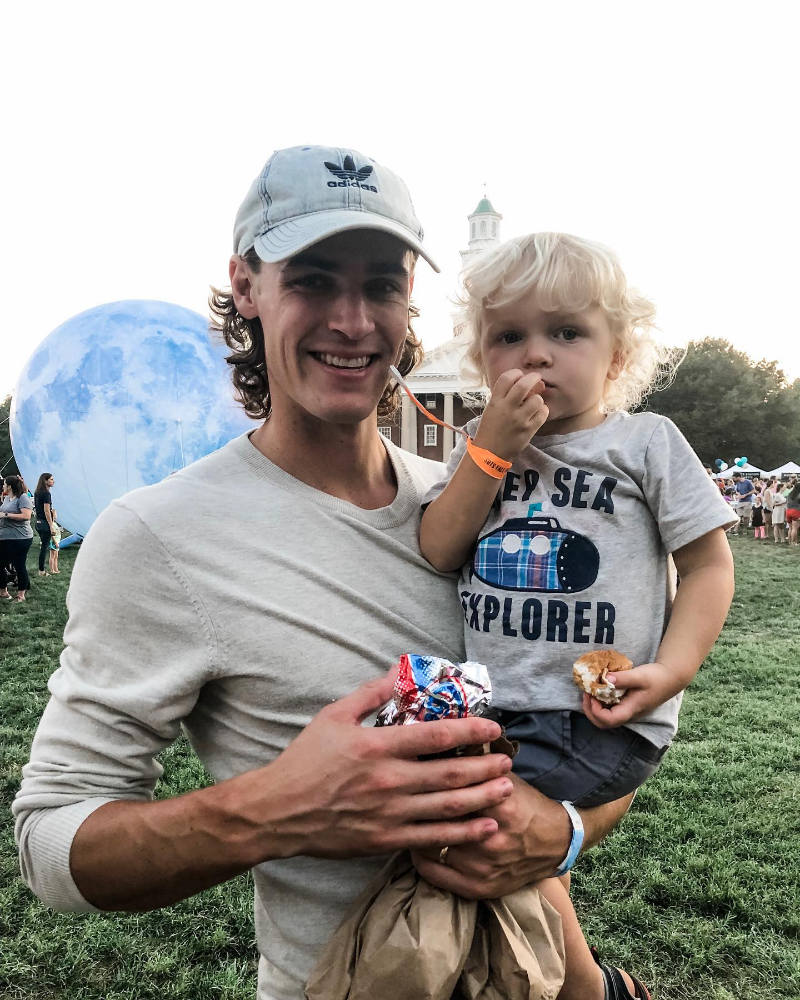

About Me

My name is Carson Troutman. I started this blog as a space to discuss my interests:
- Theology
- Philosophy
- Logic
- Sports
- Movies
- Music
- Politics
Education
- Bachelor of Arts in Biblical and Theological Studies
- Masters of Divinity in Christian Ministry
Career Experience
- I spent 10 years working as a pastor to youth and adults.
- I spent 7 years in secondary education as a teacher of religion, philosophy, logic, and contemporary cultural issues
Social Media